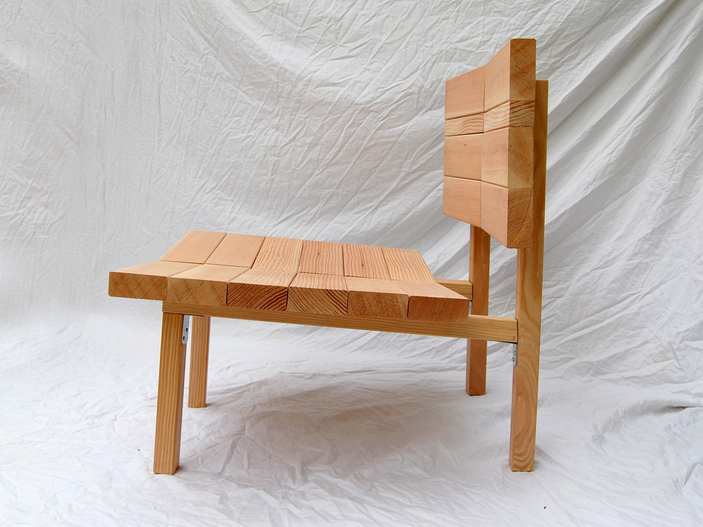
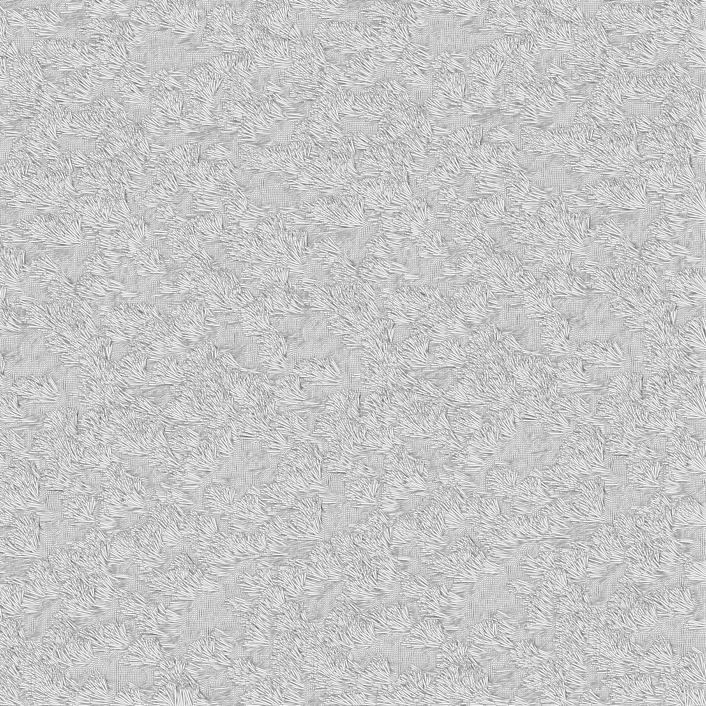
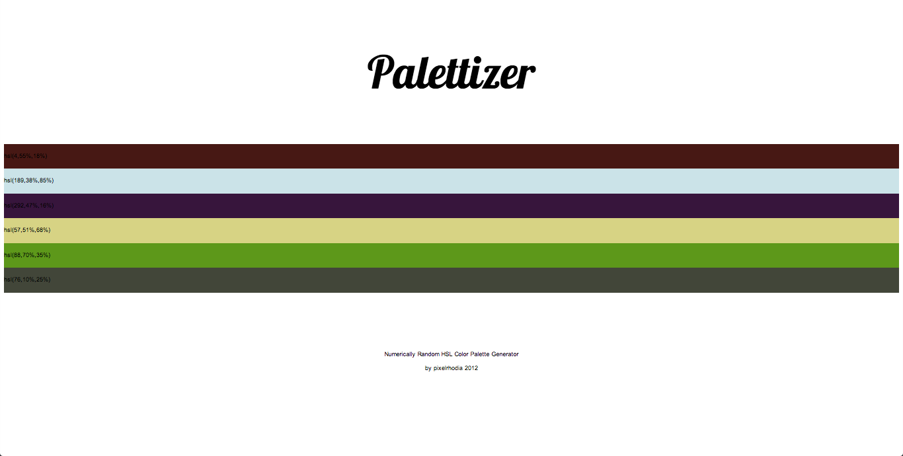

I work as a job captain and I run numerous side-projects on the weekends. My professional work has been featured in Interior Design Magazine, Green Source Magazine and AIASF Small Firms Great Projects. You can read my resume or find more of me at Github and Instagram.
Say hello!